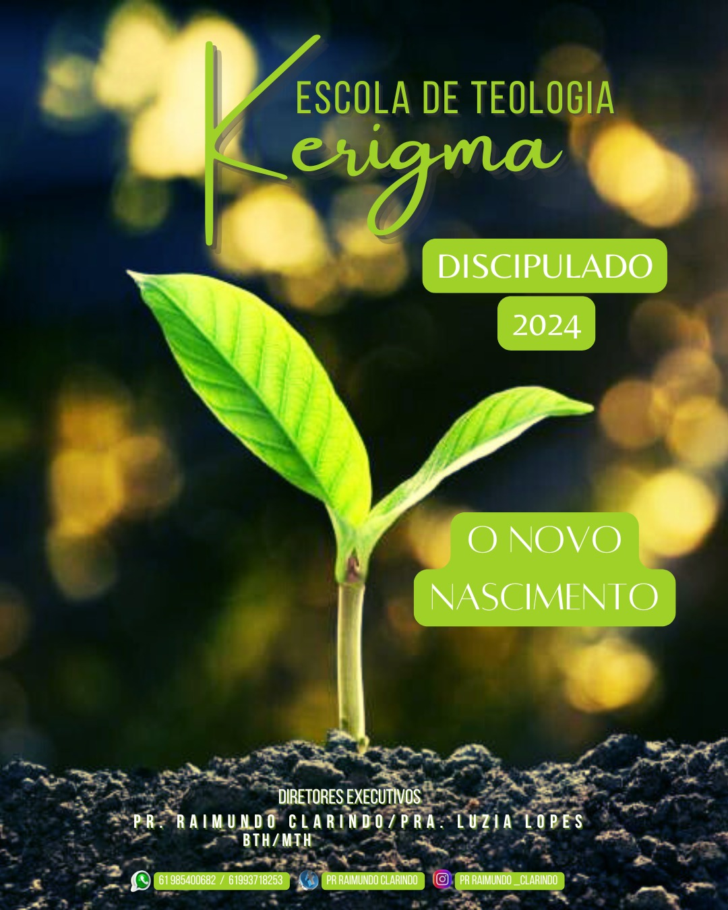
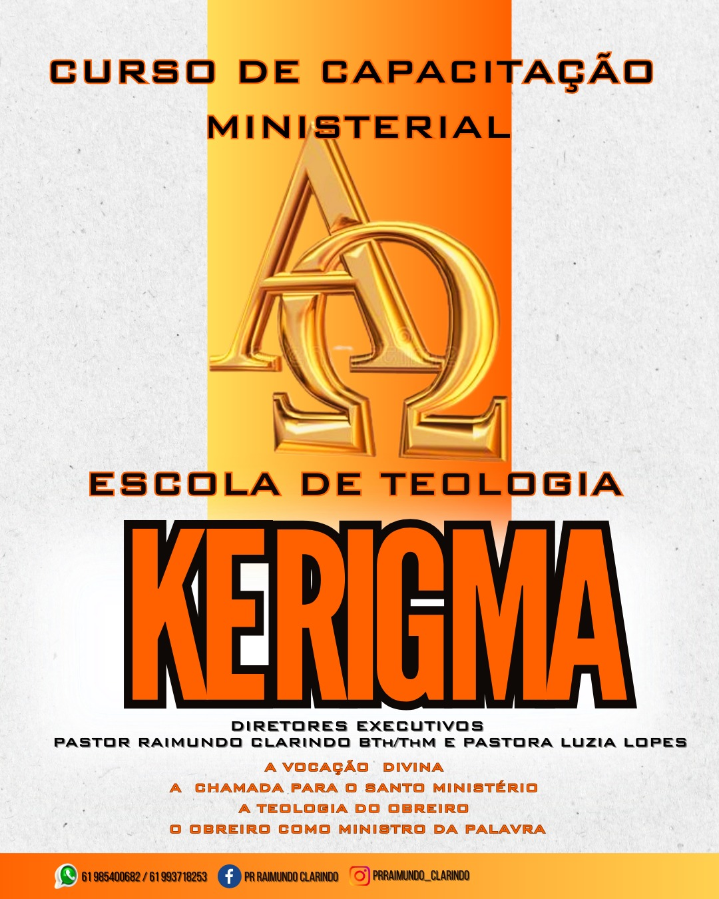
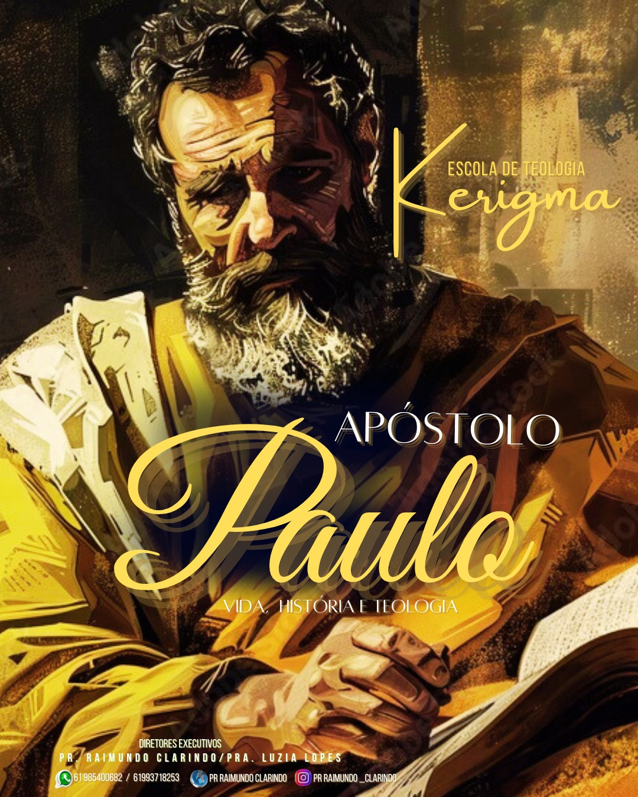

Explore nossos cursos e livros para expandir seu conhecimento!
Destaques

PDF ou Apostila
O novo Nascimento
Um novo Nascimento espiritual ocorre pela fé em Cristo e o papel do Espírito Santo na vida do crente. Além disso, aborda como essa transformação afeta a vida diária, o caráter e o relacionamento com Deus e com os outros.

PDF ou Apostila
Capacitação Ministerial
A vocação divina, o chamado para o santo ministerio, como ministrar a palavra, líderes e aspirantes a líderes religiosos que desejam aprofundar seus conhecimentos e habilidades no ministério cristão.

PDF ou Apostila
Apóstolo Paulo (vida, obra e teologia)
Um mergulho na vida e obra do Apóstolo Paulo, destacando seu
papel fundamental na disseminação do evangelho e na formação das
primeiras igrejas cristãs.
PDF ou Apostila
Escatologia
Explore as profecias bíblicas sobre o fim dos tempos e obtenha
uma compreensão profunda dos eventos que, segundo as escrituras,
estão por vir.
Cursos em Destaque
PDF ou Apostila
Seitas e Heresias
Entenda as práticas de seitas e heresias nos dias atuais.